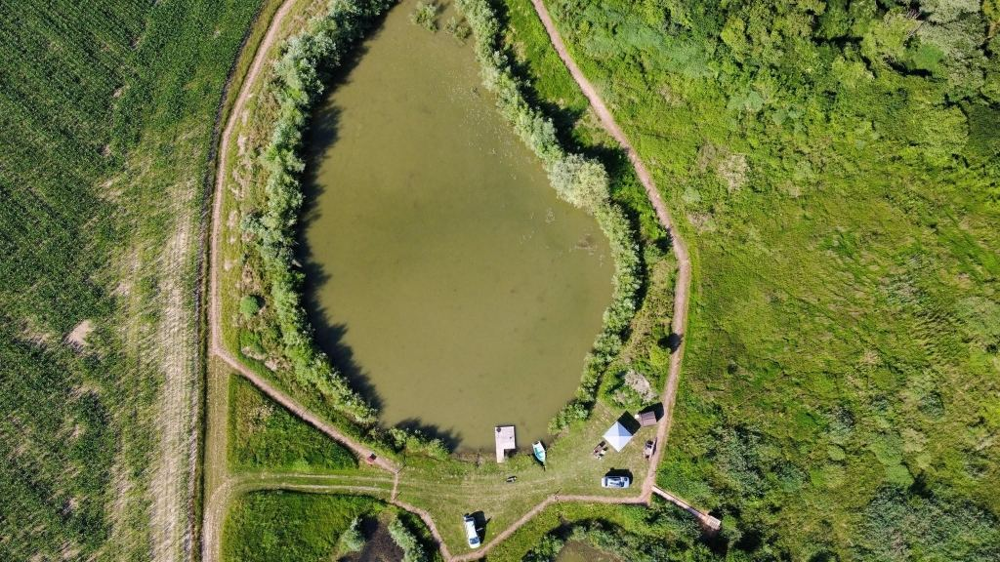

Stanování a bivakování
Stan nebo bivak přímo u vody.
Zásady zpracování osobních údajů na webu Rybníky na Hatích.
Provozovatel revíru Rybníky na Hatích (kontakt: fishtommm@seznam.cz).
Osobní údaje zadané do rezervačního kalendáře (jméno, e-mail, telefon) slouží výhradně k vyřízení rezervace a komunikaci o příjezdu.
Údaje uchováváme po dobu nezbytnou k vyřízení rezervace. Neprodáváme je ani nepředáváme třetím stranám pro marketingové účely.
Máte právo na přístup, opravu či výmaz svých údajů. Žádosti posílejte na fishtommm@seznam.cz.
Tento web nepoužívá sledovací, analytické ani reklamní cookies.
Prohlížení webu je anonymní. Jediná informace, kterou si prohlížeč pamatuje, je vaše volba „Rozumím" v tomto banneru — uložená v localStorage pouze proto, aby se banner nezobrazoval opakovaně. Neobsahuje žádné identifikační údaje a neposílá se na server.
Rezervační systém Reenio (vložený přes iframe) může používat vlastní technicky nezbytné cookies pro funkci rezervace.
Rybníky na Hatích
Soukromý rybářský revír (Vnorovy / Hatě)
E-mail: fishtommm@seznam.cz
Facebook: Rybníky na Hatích

Klid, příroda a rybník jen pro vás.
O revíru
Zázemí
Stan nebo bivak přímo u vody.
Pronájem karavanu s výhledem na rybník.
Čisté WC přístupné po dřevěném chodníčku.
Pravidla
Lov povolen na položenou, plavanou.
Max. 2 pruty na osobu.
Systém Chyť a pusť, po dohodě si lze rybu odkoupit.
Ceník
max. 3 osoby
Rezervace
Kontakt